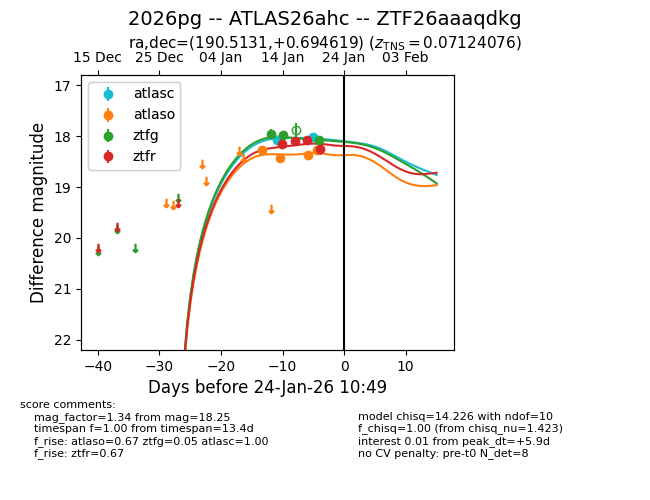
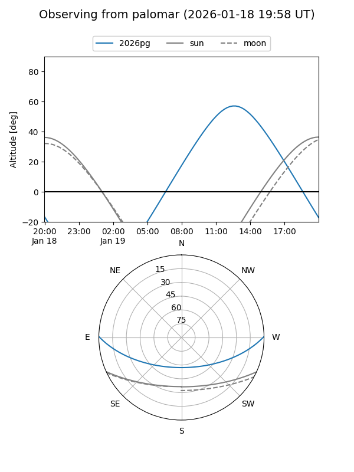
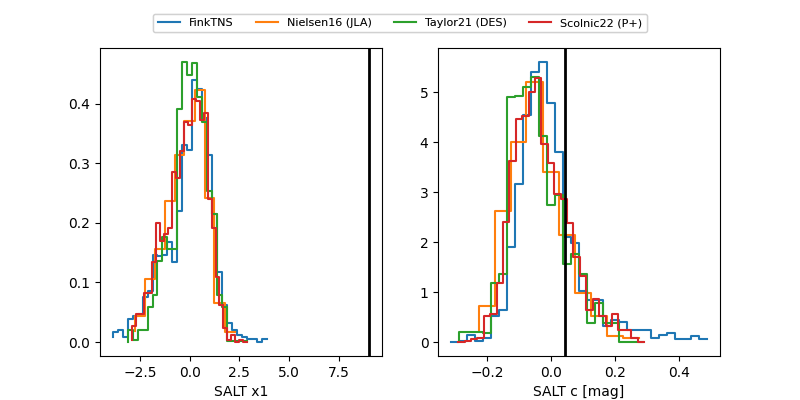

2026pg
Target 2026pg at 2026-01-29 02:26
Aliases and brokers:
FINK: link
Lasair: link
ALeRCE: link
TNS: link
YSE: link
alt names
ZTF26aaaqdkg (ztf,fink_ztf)
2026pg (tns,yse)
ATLAS26ahc (atlas)
PS26kv (panstarrs)
Coordinates:
equatorial (ra, dec) = 190.5131,+0.69462
equatorial (HMS+DMS) = 12:42:03.14,+00:41:40.63
galactic (l, b) = (297.6732,+63.47049)
Flags:
confirmed ia
Photometry:
last atlasc=18.26, atlaso=18.40, ztfg=18.08, ztfr=18.35
3 atlasc, 5 atlaso, 3 ztfg, 5 ztfr detections
Lightcurve

Visibility


Additional plots
